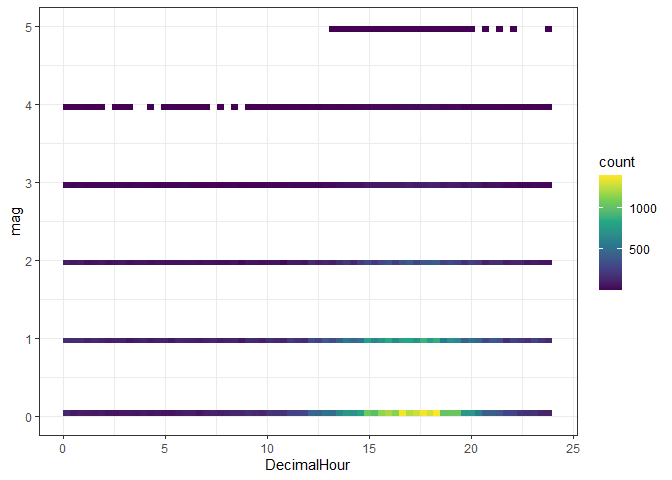
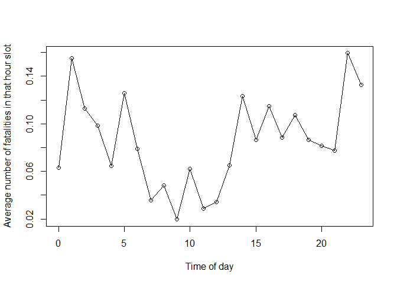
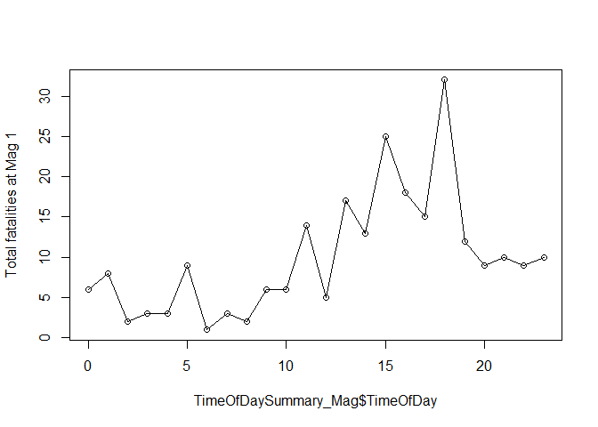
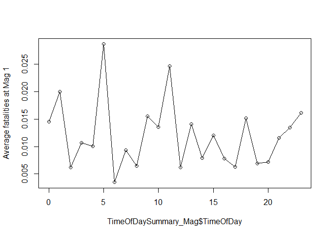
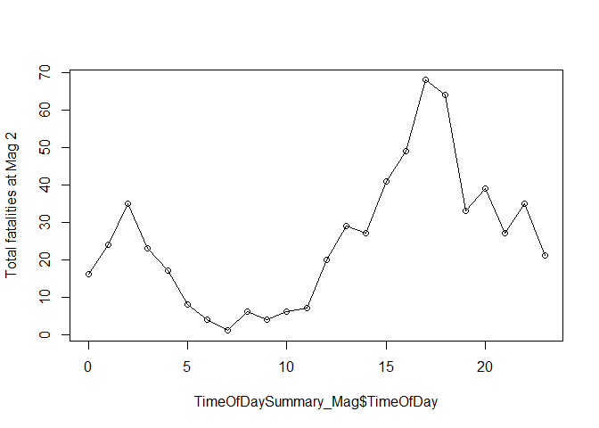
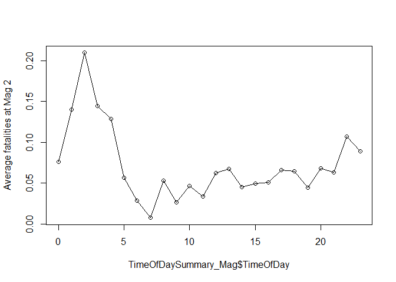
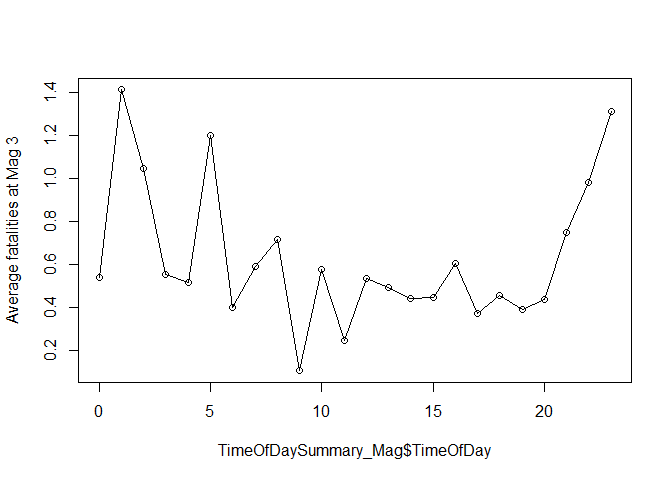
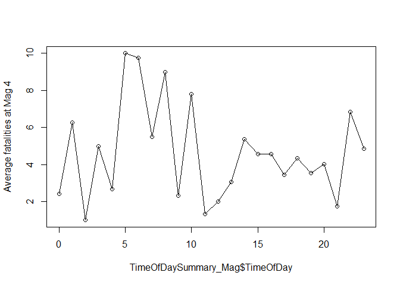

Apatial Regression
Aug 31, 2021
# load library
# if a library doesn't exist, then to download, go to the packages menu (next to help) and click install
# Upon downloading the .rmd file, I attempted to run this first code chunk and found that many of the libraries weren't installed.
#I needed to install each library before downloading it via this code
rm(list=ls())
library(sp)
library(sf)
library(raster)
library(tidycensus)
library(tidyverse)
library(plotly)
library(olsrr)
library(tmap)
library(RColorBrewer)
library("lubridate")
library(dplyr)
library(tmap)# dot . means current folder - and you don't need a file extension
# this code chunk uses "st_read" to read in the features from the initial tornado point shapefile
# the table/spreadsheet of data is saved to a variable "T_data"
T_data <- st_read(dsn="./1950-2019-torn-initpoint",
layer="1950-2019-torn-initpoint")## Reading layer `1950-2019-torn-initpoint' from data source
## `C:\Users\Gift\Desktop\GEOG596A\Tornado_Website\1950-2019-torn-initpoint'
## using driver `ESRI Shapefile'
## Simple feature collection with 65162 features and 22 fields
## Geometry type: POINT
## Dimension: XY
## Bounding box: xmin: -163.53 ymin: 17.7212 xmax: -64.7151 ymax: 61.02
## Geodetic CRS: WGS 84# make the date
# set the values in the date column to the variable "T_data$date"
# as.Date command converts the character data in the column to represent calendar dates
# calendar date is in the format year, month, date
T_data$date <- as.Date(T_data$date, format="%Y-%m-%d")# Let's cheat
head(T_data$time)## [1] "11:00:00" "11:55:00" "16:00:00" "05:25:00" "19:30:00" "21:00:00"# strsplit splits each character time string into a "list" (advent calendar) of the hour, minutes and seconds for each row
Fulltimes <- strsplit(T_data$time,":")
# Now we use the lapply function to make a new list with just the first one
# and we turn it back into just a normal row of numbers
T_data$hours <-as.numeric(unlist(lapply(Fulltimes, "[",1)))
T_data$minutes <-as.numeric(unlist(lapply(Fulltimes, "[",2)))
T_data$seconds <-as.numeric(unlist(lapply(Fulltimes, "[",3)))
T_data$DecimalHour <- T_data$hours + (T_data$minutes/60)# This is the number of tornados at each magnitude and each hour
table(T_data$hour,T_data$mag)##
## -9 0 1 2 3 4 5
## 0 1 283 412 211 39 7 0
## 1 1 236 400 171 34 8 0
## 2 2 209 322 167 43 2 0
## 3 0 201 281 159 36 4 0
## 4 0 214 299 132 31 3 0
## 5 1 206 314 142 25 4 0
## 6 3 245 287 140 30 4 0
## 7 0 309 321 133 22 2 0
## 8 0 375 311 113 32 1 0
## 9 2 446 386 152 28 3 0
## 10 4 570 444 129 38 5 0
## 11 3 828 567 209 61 9 0
## 12 7 1288 811 321 56 15 0
## 13 17 1778 1206 432 111 18 5
## 14 35 2407 1653 594 161 46 9
## 15 40 3200 2073 829 219 72 10
## 16 46 3751 2315 964 250 66 8
## 17 28 3858 2387 1030 315 91 11
## 18 49 3460 2113 990 290 82 7
## 19 28 2732 1743 746 249 49 4
## 20 16 1646 1258 574 181 34 2
## 21 7 1021 864 426 125 21 1
## 22 6 645 668 326 60 13 1
## 23 2 450 618 235 61 13 1# mag < 0 has been set to missing
T_data$mag[T_data$mag < 0 ] <- NA# Bin size control + color palette
ggplot(T_data, aes(x=DecimalHour, y=mag) ) +
geom_bin2d(bins = 70) +
scale_fill_continuous(type = "viridis") +
theme_bw()
# Bin size control + color palette
ggplot(T_data, aes(x=DecimalHour, y=fat) ) +
geom_bin2d(bins = 70) +
scale_fill_continuous(type = "viridis") +
theme_bw()
TimeOfDay <- split(T_data,as.factor(T_data$hours))
TimeOfDaySummary <- data.frame(TimeOfDay = sapply(split(T_data$hours,as.factor(T_data$hours)),"[",1),
NumberOfTornados = sapply(TimeOfDay,nrow),
TotalFatalities = sapply(split(T_data$fat,as.factor(T_data$hours)),sum,na.rm=TRUE),
AvFatalities = sapply(split(T_data$fat,as.factor(T_data$hours)),mean,na.rm=TRUE),
AvMag = sapply(split(T_data$mag,as.factor(T_data$hours)),mean,na.rm=TRUE))
## In words, make a wish list of what you would like to see by hour
TimeOfDaySummary## TimeOfDay NumberOfTornados TotalFatalities AvFatalities AvMag
## 0 0 953 60 0.06295908 1.0283613
## 1 1 850 132 0.15529412 1.0318021
## 2 2 745 84 0.11275168 1.0672948
## 3 3 681 67 0.09838473 1.0616740
## 4 4 679 44 0.06480118 0.9837997
## 5 5 692 87 0.12572254 0.9971056
## 6 6 709 56 0.07898449 0.9532578
## 7 7 787 28 0.03557814 0.8398983
## 8 8 832 40 0.04807692 0.7656250
## 9 9 1017 20 0.01966568 0.7743842
## 10 10 1190 74 0.06218487 0.7048904
## 11 11 1677 48 0.02862254 0.7192354
## 12 12 2498 85 0.03402722 0.6748294
## 13 13 3567 233 0.06532100 0.7042254
## 14 14 4905 605 0.12334353 0.7295688
## 15 15 6443 558 0.08660562 0.7380915
## 16 16 7400 849 0.11472973 0.7202883
## 17 17 7720 682 0.08834197 0.7554602
## 18 18 6991 750 0.10728079 0.7672141
## 19 19 5551 479 0.08629076 0.7600942
## 20 20 3711 303 0.08164915 0.8376184
## 21 21 2465 191 0.07748479 0.8868999
## 22 22 1719 274 0.15939500 0.9089317
## 23 23 1380 183 0.13260870 0.9637155#split by year
ByYear <- split(T_data,as.factor(T_data$yr))
ByYearSummary <- data.frame(Year = sapply(split(T_data$yr,as.factor(T_data$yr)),"[",1),
NumberOfTornados = sapply(ByYear,nrow),
TotalFatalities = sapply(split(T_data$fat,as.factor(T_data$yr)),sum,na.rm=TRUE),
AvFatalities = sapply(split(T_data$fat,as.factor(T_data$yr)),mean,na.rm=TRUE),
AvMag = sapply(split(T_data$mag,as.factor(T_data$yr)),mean,na.rm=TRUE))
## In words, make a wish list of what you would like to see by hour
ByYearSummary## Year NumberOfTornados TotalFatalities AvFatalities AvMag
## 1950 1950 201 70 0.348258706 1.6019900
## 1951 1951 260 34 0.130769231 1.3653846
## 1952 1952 240 230 0.958333333 1.6916667
## 1953 1953 421 523 1.242280285 1.5201900
## 1954 1954 550 36 0.065454545 1.3618182
## 1955 1955 591 129 0.218274112 1.1455161
## 1956 1956 504 81 0.160714286 1.2738095
## 1957 1957 858 192 0.223776224 1.2902098
## 1958 1958 564 67 0.118794326 1.1560284
## 1959 1959 604 58 0.096026490 1.1672185
## 1960 1960 616 46 0.074675325 1.2548701
## 1961 1961 697 52 0.074605452 1.3271162
## 1962 1962 657 30 0.045662100 1.0837139
## 1963 1963 463 31 0.066954644 1.2829374
## 1964 1964 704 73 0.103693182 1.2315341
## 1965 1965 897 301 0.335562988 1.2664437
## 1966 1966 585 98 0.167521368 1.0854701
## 1967 1967 927 114 0.122977346 1.1380798
## 1968 1968 657 131 0.199391172 1.1354642
## 1969 1969 608 66 0.108552632 1.1036184
## 1970 1970 653 73 0.111791730 1.1944870
## 1971 1971 889 159 0.178852643 1.2553431
## 1972 1972 741 27 0.036437247 1.1255061
## 1973 1973 1102 89 0.080762250 1.2422868
## 1974 1974 945 366 0.387301587 1.3079365
## 1975 1975 919 60 0.065288357 0.9836779
## 1976 1976 834 44 0.052757794 1.0887290
## 1977 1977 852 43 0.050469484 1.0387324
## 1978 1978 789 53 0.067173638 0.7984791
## 1979 1979 855 84 0.098245614 0.8128655
## 1980 1980 866 28 0.032332564 0.9699769
## 1981 1981 782 24 0.030690537 0.9143223
## 1982 1982 1047 64 0.061127030 0.9531996
## 1983 1983 930 34 0.036559140 0.9172043
## 1984 1984 907 122 0.134509372 0.8687982
## 1985 1985 684 94 0.137426901 0.7909357
## 1986 1986 765 15 0.019607843 0.7555556
## 1987 1987 656 59 0.089939024 0.6265244
## 1988 1988 702 32 0.045584046 0.7934473
## 1989 1989 856 50 0.058411215 0.7500000
## 1990 1990 1133 53 0.046778464 0.7775816
## 1991 1991 1132 39 0.034452297 0.5715548
## 1992 1992 1297 39 0.030069391 0.6607556
## 1993 1993 1172 33 0.028156997 0.5093857
## 1994 1994 1082 69 0.063770795 0.5027726
## 1995 1995 1237 30 0.024252223 0.4761520
## 1996 1996 1173 26 0.022165388 0.4893436
## 1997 1997 1148 68 0.059233449 0.5043554
## 1998 1998 1424 130 0.091292135 0.5287921
## 1999 1999 1339 94 0.070201643 0.5772965
## 2000 2000 1075 41 0.038139535 0.4306977
## 2001 2001 1215 40 0.032921811 0.4666667
## 2002 2002 934 55 0.058886510 0.4743041
## 2003 2003 1374 54 0.039301310 0.4759825
## 2004 2004 1817 35 0.019262521 0.4210237
## 2005 2005 1263 38 0.030087094 0.4552652
## 2006 2006 1103 67 0.060743427 0.5222121
## 2007 2007 1095 81 0.073972603 0.5324201
## 2008 2008 1689 126 0.074600355 0.5837774
## 2009 2009 1156 22 0.019031142 0.5043253
## 2010 2010 1281 45 0.035128806 0.5768931
## 2011 2011 1691 553 0.327025429 0.7616795
## 2012 2012 938 69 0.073560768 0.5511727
## 2013 2013 906 55 0.060706402 0.6070640
## 2014 2014 886 47 0.053047404 0.6106095
## 2015 2015 1177 36 0.030586236 0.5012744
## 2016 2016 976 18 0.018442623 0.5813953
## 2017 2017 1428 35 0.024509804 0.6561584
## 2018 2018 1126 10 0.008880995 0.5347160
## 2019 2019 1517 42 0.027686223 0.6586466plot(ByYearSummary$Year,
ByYearSummary$TotalFatalities,type="h")
# The ~ means "is a function of" e.g. y variable goes first
plot(TimeOfDaySummary$AvFatalities ~ TimeOfDaySummary$TimeOfDay,
ylab="Average number of fatalities in that hour slot",
xlab="Time of day",
type="o")
# YOU CHOOSE THE MAGNITUDE HERE
magnitude <- 1
# filter that mag
T_data_Mag <- filter(T_data,mag==magnitude)
# Split the data
TimeOfDay_Mag <- split(T_data_Mag,as.factor(T_data_Mag$hours))
# split by time of day as a summary table
TimeOfDaySummary_Mag <- data.frame(TimeOfDay = sapply(split(T_data_Mag$hours,as.factor(T_data_Mag$hours)),"[",1),
NumberOfTornados = sapply(TimeOfDay_Mag,nrow),
TotalFatalities = sapply(split(T_data_Mag$fat,as.factor(T_data_Mag$hours)),sum,na.rm=TRUE),
AvFatalities = sapply(split(T_data_Mag$fat,as.factor(T_data_Mag$hours)),mean,na.rm=TRUE),
AvMag = sapply(split(T_data_Mag$mag,as.factor(T_data_Mag$hours)),mean,na.rm=TRUE))
plot(TimeOfDaySummary_Mag$TotalFatalities ~ TimeOfDaySummary_Mag$TimeOfDay,
ylab=paste("Total fatalities at Mag",magnitude),type="o")
plot(TimeOfDaySummary_Mag$AvFatalities ~ TimeOfDaySummary_Mag$TimeOfDay,
ylab=paste("Average fatalities at Mag",magnitude),type="o")
# YOU CHOOSE THE MAGNITUDE HERE
magnitude <- 2
# filter that mag
T_data_Mag <- filter(T_data,mag==magnitude)
# Split the data
TimeOfDay_Mag <- split(T_data_Mag,as.factor(T_data_Mag$hours))
# split by time of day as a summary table
TimeOfDaySummary_Mag <- data.frame(TimeOfDay = sapply(split(T_data_Mag$hours,as.factor(T_data_Mag$hours)),"[",1),
NumberOfTornados = sapply(TimeOfDay_Mag,nrow),
TotalFatalities = sapply(split(T_data_Mag$fat,as.factor(T_data_Mag$hours)),sum,na.rm=TRUE),
AvFatalities = sapply(split(T_data_Mag$fat,as.factor(T_data_Mag$hours)),mean,na.rm=TRUE),
AvMag = sapply(split(T_data_Mag$mag,as.factor(T_data_Mag$hours)),mean,na.rm=TRUE))
plot(TimeOfDaySummary_Mag$TotalFatalities ~ TimeOfDaySummary_Mag$TimeOfDay,
ylab=paste("Total fatalities at Mag",magnitude),type="o")
plot(TimeOfDaySummary_Mag$AvFatalities ~ TimeOfDaySummary_Mag$TimeOfDay,
ylab=paste("Average fatalities at Mag",magnitude),type="o")
# YOU CHOOSE THE MAGNITUDE HERE
magnitude <- 3
# filter that mag
T_data_Mag <- filter(T_data,mag==magnitude)
# Split the data
TimeOfDay_Mag <- split(T_data_Mag,as.factor(T_data_Mag$hours))
# split by time of day as a summary table
TimeOfDaySummary_Mag <- data.frame(TimeOfDay = sapply(split(T_data_Mag$hours,as.factor(T_data_Mag$hours)),"[",1),
NumberOfTornados = sapply(TimeOfDay_Mag,nrow),
TotalFatalities = sapply(split(T_data_Mag$fat,as.factor(T_data_Mag$hours)),sum,na.rm=TRUE),
AvFatalities = sapply(split(T_data_Mag$fat,as.factor(T_data_Mag$hours)),mean,na.rm=TRUE),
AvMag = sapply(split(T_data_Mag$mag,as.factor(T_data_Mag$hours)),mean,na.rm=TRUE))
plot(TimeOfDaySummary_Mag$TotalFatalities ~ TimeOfDaySummary_Mag$TimeOfDay,
ylab=paste("Total fatalities at Mag",magnitude),type="o")
plot(TimeOfDaySummary_Mag$AvFatalities ~ TimeOfDaySummary_Mag$TimeOfDay,
ylab=paste("Average fatalities at Mag",magnitude),type="o")
# YOU CHOOSE THE MAGNITUDE HERE
magnitude <- 4
# filter that mag
T_data_Mag <- filter(T_data,mag==magnitude)
# Split the data
TimeOfDay_Mag <- split(T_data_Mag,as.factor(T_data_Mag$hours))
# split by time of day as a summary table
TimeOfDaySummary_Mag <- data.frame(TimeOfDay = sapply(split(T_data_Mag$hours,as.factor(T_data_Mag$hours)),"[",1),
NumberOfTornados = sapply(TimeOfDay_Mag,nrow),
TotalFatalities = sapply(split(T_data_Mag$fat,as.factor(T_data_Mag$hours)),sum,na.rm=TRUE),
AvFatalities = sapply(split(T_data_Mag$fat,as.factor(T_data_Mag$hours)),mean,na.rm=TRUE),
AvMag = sapply(split(T_data_Mag$mag,as.factor(T_data_Mag$hours)),mean,na.rm=TRUE))
plot(TimeOfDaySummary_Mag$TotalFatalities ~ TimeOfDaySummary_Mag$TimeOfDay,
ylab=paste("Total fatalities at Mag",magnitude),type="o")
plot(TimeOfDaySummary_Mag$AvFatalities ~ TimeOfDaySummary_Mag$TimeOfDay,
ylab=paste("Average fatalities at Mag",magnitude),type="o")
# YOU CHOOSE THE MAGNITUDE HERE
magnitude <- 5
# filter that mag
T_data_Mag <- filter(T_data,mag==magnitude)
# Split the data
TimeOfDay_Mag <- split(T_data_Mag,as.factor(T_data_Mag$hours))
# split by time of day as a summary table
TimeOfDaySummary_Mag <- data.frame(TimeOfDay = sapply(split(T_data_Mag$hours,as.factor(T_data_Mag$hours)),"[",1),
NumberOfTornados = sapply(TimeOfDay_Mag,nrow),
TotalFatalities = sapply(split(T_data_Mag$fat,as.factor(T_data_Mag$hours)),sum,na.rm=TRUE),
AvFatalities = sapply(split(T_data_Mag$fat,as.factor(T_data_Mag$hours)),mean,na.rm=TRUE),
AvMag = sapply(split(T_data_Mag$mag,as.factor(T_data_Mag$hours)),mean,na.rm=TRUE))
plot(TimeOfDaySummary_Mag$TotalFatalities ~ TimeOfDaySummary_Mag$TimeOfDay,
ylab=paste("Total fatalities at Mag",magnitude),type="o")
plot(TimeOfDaySummary_Mag$AvFatalities ~ TimeOfDaySummary_Mag$TimeOfDay,
ylab=paste("Average fatalities at Mag",magnitude),type="o")
Your text goes here

This work is licensed under a Creative Commons Attribution-NonCommercial 4.0 International License.
Website created and maintained by Helen Greatrex. Website template by Noli Brazil